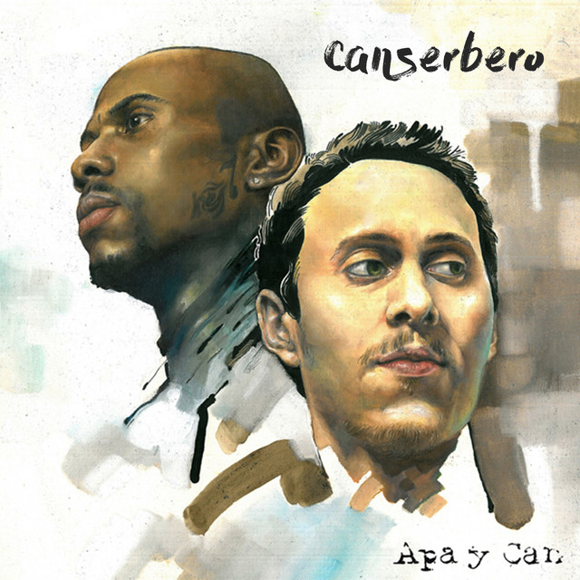
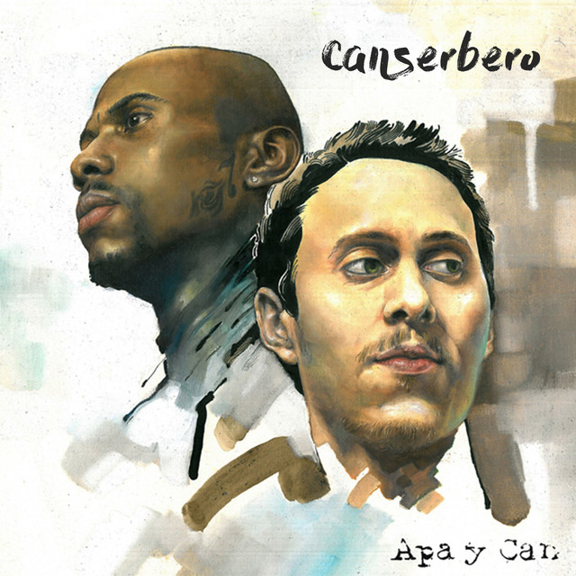
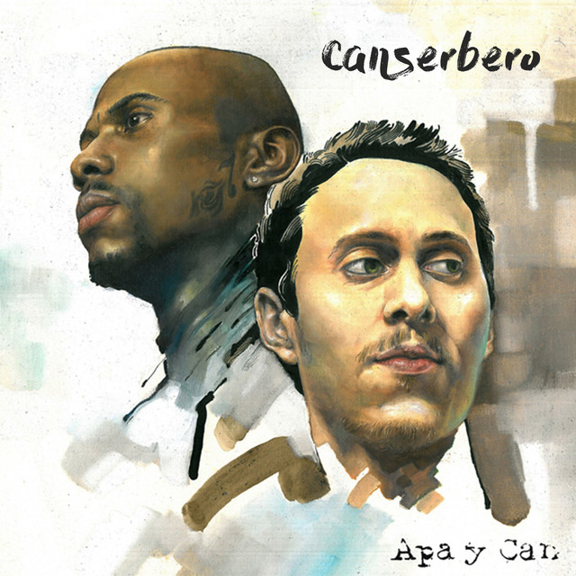

-

 

A temprana edad se interesó por el rap, y cuando tenía once años comenzó a realizar puestas en escena de rap bajo el nombre artístico de Canserbero, una jerga del latinismo perro cerbero (en latín canis cerberus), que significa «guardián», alusión a Cerbero de la mitología griega. Desde joven mostró interés por la música, principalmente influenciado por el reggae y reggaeton, pero tras el asesinato de su medio hermano, sus referencias musicales cambiaron a géneros más críticos como el hip hop, el hard rock y el rap conciente, apreciable en canciones como «Es épico» y «En el Valle de las Sombras».
Con el tiempo, conoció a Manuel Galvis, también conocido como Blackamikase, y al productor Afromak, seudónimo de Leonardo Díaz; ellos integraron una banda llamada Códigos de Barrio, influenciada por Comando 57 y Supremacy Hip Hop Clan. Juntos realizaron varias composiciones musicales, pero debido a sus bajos recursos económicos, no lograron grabar canciones. En el año 2000, cuando Canserbero tenía doce años, su medio hermano mayor fue asesinado; a partir de ello, empezó a inspirarse en géneros musicales críticos como el hard rock y hip hop de finales de la década de los años 90.914 En el año 2003, Canserbero estudió Informática y en clases conoció a Lil Supa, un integrante de Supremacy Hip Hop Clan, quien lo invitó a grabar con Luis Muños; el artista integró una agrupación bajo el seudónimo Basyco, una abreviación de los términos «base y contenido». Con la banda, interpretó canciones del género rap conciencia. No sería hasta 2008, que Canserbero y Lil Supa publicaron un álbum recopilatorio titulado Índigos bajo los nombres de Can+Zoo, por medio de internet. Según los medios de comunicación, el disco «aportó un impacto importante en la movida nacional y latinoamericana de rap no comercial». En el año 2009, el artista subió a internet un álbum recopilatorio llamado Guía para la acción, en la que compiló varios de sus temas grabados desde 2004 hasta 2009.
Trabajó como analista de reclamos en una empresa en Maracay y también en el Instituto Universitario Experimental de Tecnología de La Victoria. Estudió Derecho en la Universidad Bicentenaria de Aragua, pero decidió dejar la carrera para enfocarse en la música.
También era fanático del blues y el jazz, ritmos a los que les debía las bases sobre las que se asentaban sus rimas. Creció leyendo a Ernesto Sábato, Jorge Luis Borges y Fiódor Dostoievsky, cuyas obras consideraba «las letras que han perdurado en la historia», además de a críticos como Eduardo Galeano.
